Catalogue
Alarme intrusion
Détecteurs, claviers, sirènes et commandes. Baseline pour l’essentiel sans fil ; Superior pour les projets exigeants.

92 références


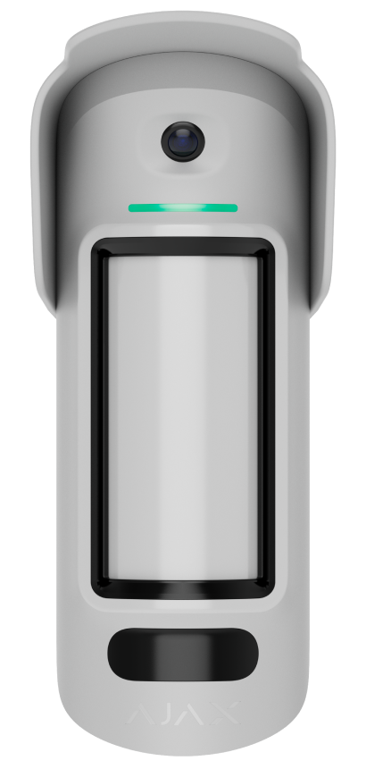


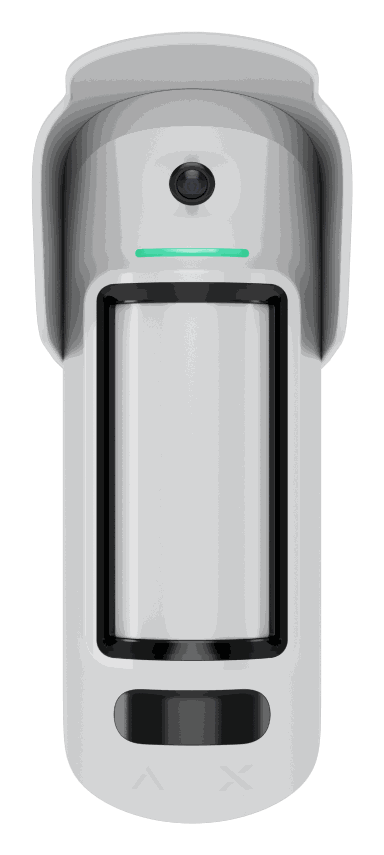
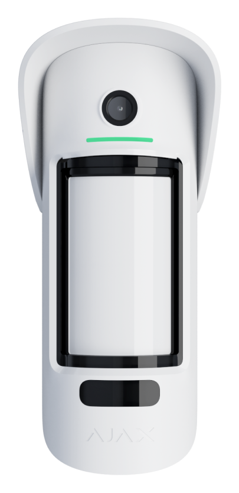


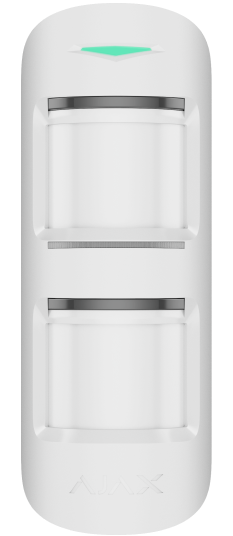
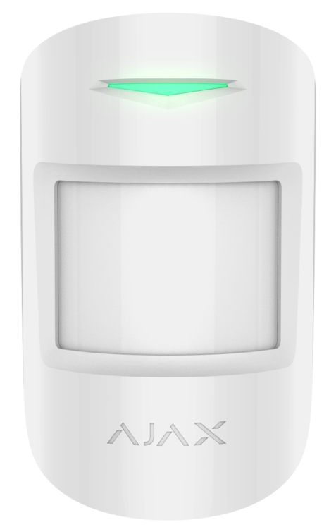
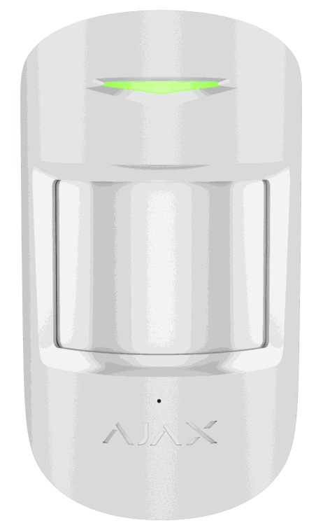


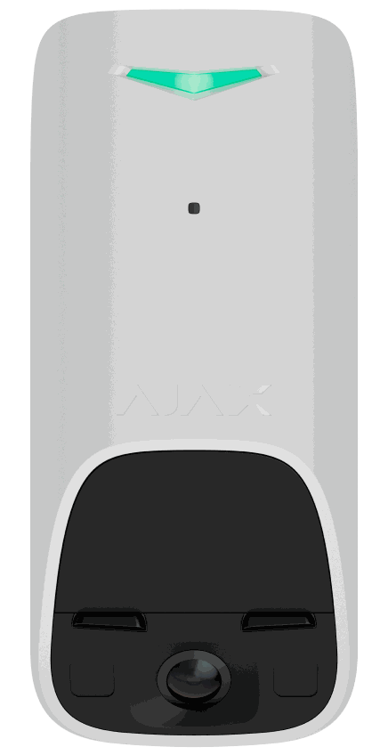


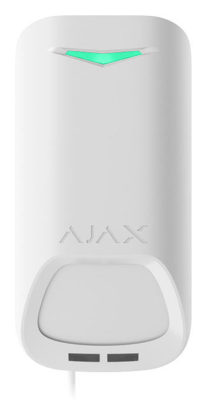
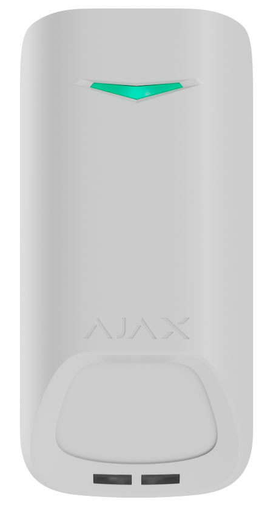
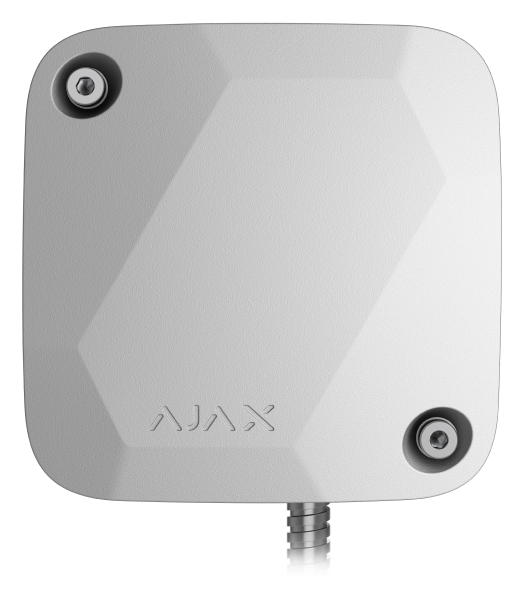


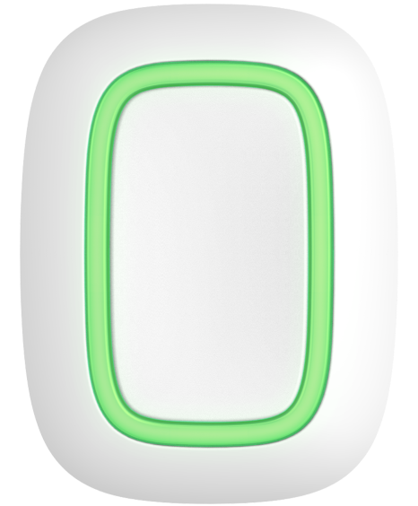


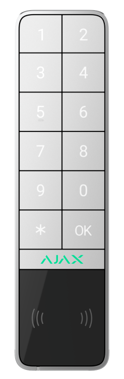


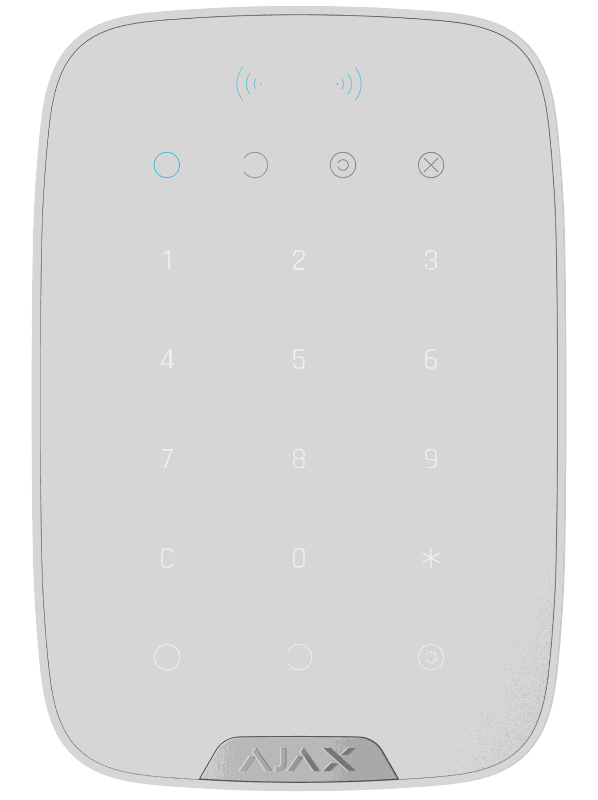


Aucune référence ne correspond à ces critères.
Performances annoncées.
Les chiffres du fabricant sont repris ici. Nous les vérifions chez vous avant le devis.
En savoir plus
Source : Ajax Systems
L’étude se fait chez vous, avant le devis.
Nous venons voir chaque accès, chaque volume, les animaux, les ouvrants et la qualité radio réelle. Le devis gratuit décrit ensuite seulement ce que le lieu demande.
En savoir plus
L’analyse porte sur les risques et les accès, pas sur une liste d’appareils à placer partout. Deux maisons voisines ne donnent pas le même chantier. Des photos peuvent préparer la visite. Elles ne remplacent pas un test radio.
La pose, le réglage, puis nous restons joignables.
Nous posons, nous testons, puis nous vous montrons comment armer, lire une alerte et repérer une pile faible.
En savoir plus
Les liaisons filaires et l’alimentation suivent le plan de l’étude. Les utilisateurs et les scénarios sont réglés avec vous. Le dépannage suit ce qui est écrit au devis. La télésurveillance, si vous la souhaitez, se discute à part. Elle n’est pas un service déjà ouvert.
Le choix se fait dans le catalogue, pas dans deux coloris imposés.
Cette famille compte 92 références, dont 73 en Jeweller et 19 en Fibra. Chaque fiche montre uniquement les coloris documentés pour ce modèle.
En savoir plus
Coloris rencontrés ici : Blanc, Graphite, Noir. Le sélecteur de version ouvre les autres optiques, formats ou alimentations de la même famille. On agrandit le système dans la même application, sans changer de marque.
Pourquoi choisir Active Sécurité 974.
Nous venons, nous chiffrons le système installé, puis nous le posons. Pas de classement, pas de nombre de clients, pas d’avis inventé.
En savoir plus
Un kit vous laisse le plan et les tests. Un installateur multimarque couvre plusieurs catalogues. Certaines offres lient le matériel à un abonnement. Ici, le devis porte d’abord sur l’installation. La télésurveillance, si vous la voulez, se discute à part et n’est pas un service déjà ouvert.
- –Kit à monterLe plan et les tests restent chez vous.
- –MultimarquePlusieurs catalogues, plusieurs logiques.
- –Abonnement liéLe matériel est parfois lié à un contrat.
- ✓AS974Étude, devis, pose, puis le SAV.
Toutes les références, pour choisir puis demander un devis.
Ouvrez la liste, choisissez une fiche, puis le coloris. Le devis reprend exactement ce choix.
En savoir plus
- DoorProtect JewellerRéf. DP.Y.J · Noir, Blanc. Détecteur d'ouverture sans fil à relais reed
- DoorProtect Plus JewellerRéf. DP.P.J · Noir, Blanc. Détecteur sans fil d'ouverture, de chocs et d'inclinaison avec relais reed et accéléromètre
- Superior DoorProtect FibraRéf. DP.Y.F · Noir, Blanc. Détecteur d'ouverture filaire avec deux relais reed
- Superior DoorProtect G3 FibraRéf. DP.G3.F · Noir, Blanc. Détecteur d'ouverture avec capteurs de choc, d'inclinaison et de masquage magnétique
- Superior DoorProtect G3 JewellerRéf. DP.G3.J · Noir, Blanc. Détecteur d’ouverture sans fil à relais reed avec capteurs de choc, d'inclinaison et de masquage
- Superior DoorProtect JewellerRéf. DP.S.J · Noir, Blanc. Détecteur d'ouverture sans fil avec deux relais reed
- Superior DoorProtect Plus FibraRéf. DP.P.F · Noir, Blanc. Détecteur filaire d'ouverture, de chocs et d'inclinaison avec deux relais reed et un accéléromètre
- Superior DoorProtect Plus JewellerRéf. DP.SP.J · Noir, Blanc. Détecteur sans fil d'ouverture, de chocs et d'inclinaison avec deux relais reed et un accéléromètre
- GlassProtect JewellerRéf. GP.Y.J · Noir, Blanc. Détecteur sans fil de bris de glace avec microphone
- Superior GlassProtect FibraRéf. GP.Y.F · Noir, Blanc. Détecteur filaire de bris de glace avec microphone
- Superior GlassProtect JewellerRéf. GP.S.J · Noir, Blanc. Détecteur sans fil de bris de glace avec microphone
- CombiProtect JewellerRéf. CP.Y.J · Noir, Blanc. Détecteur IR sans fil de mouvement et de bris de glace avec microphone
- Curtain Outdoor JewellerRéf. CO.Y.J · Blanc. Détecteur de mouvement rideau sans fil à double technologie pour une utilisation à l'extérieur et à l'intérieur
- Curtain Outdoor Mini JewellerRéf. CO.M.J · Blanc. Détecteur de mouvement sans fil de type rideau à double technologie pour une utilisation à l'extérieur et à l'intérieur
- CurtainCam Outdoor HighMount (PhOD) JewellerRéf. CC.OHMP.J · Blanc. Détecteur de mouvement rideau sans fil à double technologie avec fonctions de vérification photo étendues
- DualCurtain Outdoor JewellerRéf. DCO.Y.J · Blanc. Détecteur de mouvement sans fil IR à deux sens de type rideau
- MotionCam (PhOD) JewellerRéf. MC.P.J · Noir, Blanc. Détecteur de mouvement PIR sans fil avec des possibilités de vérification photo étendues
- MotionCam JewellerRéf. MC.Y.J · Noir, Blanc. Détecteur de mouvement IR sans fil avec levée de doute
- MotionCam Outdoor (PhOD) JewellerRéf. MC.OP.J · Blanc. Détecteur de mouvement PIR sans fil avec des possibilités de vérification photo étendues
- MotionCam Outdoor HighMount (PhOD) JewellerRéf. MC.OHMP.J · Blanc. Détecteur de mouvement PIR sans fil avec des possibilités de vérification photo étendues
- MotionCam Outdoor JewellerRéf. MC.O.J · Blanc. Détecteur de mouvement PIR sans fil qui prend des photos par alarme
- MotionProtect Curtain JewellerRéf. MP.C.J · Noir, Blanc. Détecteur de mouvement sans fil IR de type rideau
- MotionProtect JewellerRéf. MP.Y.J · Noir, Blanc. Détecteur de mouvement sans fil IR
- MotionProtect Outdoor JewellerRéf. MP.O.J · Blanc. Détecteur de mouvement IR sans fil pour l'intérieur et l'extérieur
- MotionProtect Plus JewellerRéf. MP.P.J · Noir, Blanc. Détecteur de mouvement sans fil IR avec capteur supplémentaire à micro-ondes en bande K
- Superior CombiProtect FibraRéf. CP.Y.F · Noir, Blanc. Détecteur de mouvement et de bris de glace filaire IR avec microphone
- Superior CombiProtect JewellerRéf. CP.S.J · Noir, Blanc. Détecteur de mouvement IR et détecteur de bris de glace sans fil avec microphone
- Superior MotionCam (PhOD) FibraRéf. MC.P.F · Noir, Blanc. Détecteur de mouvement PIR filaire avec des possibilités de vérification photo étendues
- Superior MotionCam (PhOD) JewellerRéf. MC.SP.J · Noir, Blanc. Détecteur de mouvement PIR sans fil avec des possibilités de vérification photo étendues
- Superior MotionCam AM (PhOD) JewellerRéf. MC.SAMP.J · Blanc. Détecteur de mouvement PIR sans fil avec un système anti-masque et des possibilités de vérification photo étendues
- Superior MotionCam FibraRéf. MC.Y.F · Noir, Blanc. Détecteur de mouvement IR filaire avec levée de doute
- Superior MotionCam G3 (PhOD) JewellerRéf. MC.G3P.J · Noir, Blanc. Détecteur de mouvement PIR sans fil avec des possibilités de vérification photo étendues
- Superior MotionCam HD (PhOD) JewellerRéf. MC.SPHD.J · Noir, Blanc. Détecteur de mouvement PIR sans fil avec des possibilités de vérification photo étendues
- Superior MotionProtect FibraRéf. MP.Y.F · Noir, Blanc. Détecteur de mouvement filaire IR
- Superior MotionProtect G3 FibraRéf. MP.G3.F · Blanc, Noir. Détecteur de mouvement PIR filaire avec système anti-masquage
- Superior MotionProtect G3 JewellerRéf. MP.G3.J · Noir, Blanc. Détecteur de mouvement PIR sans fil avec système anti-masquage
- Superior MotionProtect JewellerRéf. MP.S.J · Noir, Blanc. Détecteur de mouvement IR sans fil
- Superior MotionProtect Plus FibraRéf. MP.P.F · Noir, Blanc. Détecteur de mouvement filaire IR avec capteur supplémentaire à micro-ondes en bande K
- Superior MotionProtect Plus G3 FibraRéf. MPP.G3.F · Noir, Blanc. Détecteur de mouvement IR filaire avec capteur supplémentaire à micro-ondes en bande K et anti-masquage
- Superior MotionProtect Plus G3 JewellerRéf. MPP.G3.J · Noir, Blanc. Détecteur de mouvement PIR sans fil avec capteur supplémentaire à micro-ondes en bande K et système anti-masquage
- Superior MotionProtect Plus JewellerRéf. MP.SP.J · Noir, Blanc. Détecteur de mouvement IR sans fil avec capteur supplémentaire à micro-ondes en bande K
- Superior SeismoProtect G3 FibraRéf. SP.G3.F-000-Y · Noir, Blanc. Détecteur sismique filaire avec capteur de choc supplémentaire
- HomeSiren JewellerRéf. HS.Y.J · Noir, Blanc. Sirène sans fil
- HomeSiren Plus JewellerRéf. HS.P.J · Noir, Blanc. Sirène sans fil avec capacités audio étendues et alertes flexibles
- StreetSiren DoubleDeck JewellerRéf. SS.DD.J · Noir, Blanc. Sirène sans fil avec un support pour un panneau frontal personnalisable
- StreetSiren JewellerRéf. SS.Y.J · Noir, Blanc. Sirène sans fil pour l'intérieur et l'extérieur
- Superior HomeSiren FibraRéf. HS.Y.F · Noir, Blanc. Sirène filaire avec connecteur LED
- Superior HomeSiren G3 JewellerRéf. HS.G3.J · Noir, Blanc. Sirène sans fil avec protection anti-sabotage de pointe et un connecteur LED
- Superior HomeSiren JewellerRéf. HS.S.J · Noir, Blanc. Sirène sans fil
- Superior StreetSiren DoubleDeck FibraRéf. SS.DD.F · Noir, Blanc. Sirène filaire avec un support pour un panneau frontal personnalisable
- Superior StreetSiren DoubleDeck JewellerRéf. SS.SDD.J · Noir, Blanc. Sirène sans fil avec un support pour un panneau frontal personnalisable
- Superior StreetSiren FibraRéf. SS.Y.F · Noir, Blanc. Sirène filaire pour l'intérieur et l'extérieur
- Superior StreetSiren Plus FibraRéf. SS.P.F · Noir, Blanc. Sirène filaire avec protection anti-sabotage de pointe et de nombreuses certifications de conformité
- Superior StreetSiren Plus G3 JewellerRéf. SSP.G3.J · Noir, Blanc. Sirène sans fil avec protection anti-sabotage de pointe et de nombreuses certifications de conformité
- Superior StreetSiren Plus JewellerRéf. SS.S.J · Noir, Blanc. Sirène sans fil avec protection anti-sabotage de pointe et de nombreuses certifications de conformité
- Ajax SpaceControl JewellerRéf. SC.Y.J · Noir, Blanc. Télécommande avec bouton de panique et gestion des modes de sécurité
- Ajax Superior SpaceControl JewellerRéf. SC.S.J · Noir, Blanc. Télécommande sans fil avec bouton de panique et gestion des modes de sécurité
- Button JewellerRéf. BT.Y.J · Noir, Blanc. Bouton de panique / bouton intelligent sans fil
- DoubleButton JewellerRéf. DB.Y.J · Noir, Blanc. Bouton d'urgence sans fil
- Superior Button JewellerRéf. BT.S.J · Noir, Blanc. Bouton de panique / bouton intelligent sans fil
- Superior DoubleButton G3 JewellerRéf. DB.G3.J · Noir, Blanc. Bouton d'urgence sans fil pour sites à haut risque
- KeyPad JewellerRéf. KP.Y.J · Noir, Blanc. Clavier tactile sans fil
- KeyPad Outdoor JewellerRéf. KP.O.J · Noir, Blanc, Graphite. Clavier sans fil avec authentification par Pass, Tag, smartphones et codes
- KeyPad Plus JewellerRéf. KP.P.J · Noir, Blanc. Clavier tactile sans fil compatible avec les cartes et les porteclés chiffrés sans contact
- KeyPad TouchScreen JewellerRéf. KP.TS.J · Noir, Blanc. Clavier sans fil avec un écran tactile qui prend en charge l'authentification par smartphones, Pass, Tag, et codes
- Superior KeyPad FibraRéf. KP.Y.F · Noir, Blanc. Clavier tactile filaire
- Superior KeyPad Outdoor FibraRéf. KP.G3O.F · Noir, Blanc, Graphite. Clavier filaire intérieur et extérieur avec authentification par Pass, Tag, smartphones et codes
- Superior KeyPad Plus G3 JewellerRéf. KPP.G3.J · Noir, Blanc. Clavier sans fil avec touches tactiles permettant l'authentification par Pass, Tag et codes
- Superior KeyPad Plus JewellerRéf. KP.SP.J · Noir, Blanc. Clavier tactile sans fil compatible avec les cartes et les porteclés chiffrés sans contact
- Superior KeyPad TouchScreen FibraRéf. KP.TS.F · Noir, Blanc. Clavier filaire avec écran tactile et autorisation sans contact
- Superior KeyPad TouchScreen G3 JewellerRéf. KPT.G3.J · Noir, Blanc. Clavier sans fil avec écran tactile permettant l'authentification par Pass, Tag, smartphones et codes
- FireProtect 2 AC (CO) JewellerRéf. FP2.ACC.J · Noir, Blanc. Détecteur d'incendie sans fil de monoxyde de carbone alimenté par le secteur
- FireProtect 2 AC (Heat) JewellerRéf. FP2.ACH.J · Noir, Blanc. Détecteur d'incendie sans fil de chaleur alimenté par le secteur
- FireProtect 2 AC (Heat/CO) JewellerRéf. FP2.ACHC.J · Noir, Blanc. Détecteur d'incendie sans fil de chaleur et de monoxyde de carbone alimenté par le secteur
- FireProtect 2 AC (Heat/Smoke) JewellerRéf. FP2.ACHS.J · Noir, Blanc. Détecteur d'incendie sans fil de fumée et de chaleur alimenté par le secteur
- FireProtect 2 AC (Heat/Smoke/CO) JewellerRéf. FP2.ACHSC.J · Noir, Blanc. Détecteur d'incendie sans fil de fumée, de chaleur et de monoxyde de carbone alimenté par le secteur
- FireProtect 2 RB (CO) JewellerRéf. FP2.RBC.J · Noir, Blanc. Détecteur sans fil de CO avec batteries remplaçables
- FireProtect 2 RB (CO) UL JewellerRéf. FP2.RBC.J-000-NA.UL · Noir, Blanc. Détecteur d'incendie sans fil avec capteur de CO
- FireProtect 2 RB (Heat) JewellerRéf. FP2.RBH.J · Noir, Blanc. Détecteur sans fil de chaleur avec batteries remplaçables
- FireProtect 2 RB (Heat) UL JewellerRéf. FP2.RBH.J-000-NA.UL · Noir, Blanc. Détecteur d'incendie sans fil avec capteur de chaleur
- FireProtect 2 RB (Heat/CO) JewellerRéf. FP2.RBHC.J · Noir, Blanc. Détecteur sans fil de chaleur et de CO avec batteries remplaçables
- FireProtect 2 RB (Heat/Smoke) JewellerRéf. FP2.RBHS.J · Noir, Blanc. Détecteur sans fil de chaleur et de fumée avec batteries remplaçables
- FireProtect 2 RB (Heat/Smoke) UL JewellerRéf. FP2.RBHS.J-000-NA.UL · Noir, Blanc. Détecteur sans fil de chaleur et de fumée avec batteries remplaçables
- FireProtect 2 RB (Heat/Smoke/CO) JewellerRéf. FP2.RBHSC.J · Noir, Blanc. Détecteur sans fil de chaleur, de fumée et de CO avec batteries remplaçables
- FireProtect 2 RB (Heat/Smoke/CO) UL JewellerRéf. FP2.RBHSC.J-000-NA.UL · Noir, Blanc. Détecteur sans fil de chaleur, de fumée et de CO avec batteries remplaçables
- FireProtect 2 SB (CO) JewellerRéf. FP2.SBC.J · Noir, Blanc. Détecteur sans fil de CO avec batteries scellées
- FireProtect 2 SB (Heat) JewellerRéf. FP2.SBH.J · Noir, Blanc. Détecteur sans fil de chaleur avec batteries scellées
- FireProtect 2 SB (Heat/CO) JewellerRéf. FP2.SBHC.J · Noir, Blanc. Détecteur sans fil de chaleur et de CO avec batteries scellées
- FireProtect 2 SB (Heat/Smoke) JewellerRéf. FP2.SBHS.J · Noir, Blanc. Détecteur sans fil de chaleur et de fumée avec batteries scellées
- FireProtect 2 SB (Heat/Smoke/CO) JewellerRéf. FP2.SBHSC.J · Noir, Blanc. Détecteur sans fil de chaleur, de fumée et de CO avec batteries scellées
- FireProtect JewellerRéf. FP.Y.J · Noir, Blanc. Détecteur d'incendie sans fil avec capteur de chaleur et de fumée
- FireProtect Plus JewellerRéf. FPP.Y.J · Noir, Blanc. Détecteur sans fil de chaleur, de fumée et de CO avec batteries remplaçables
Besoin d’aide pour composer votre système ?
Étude gratuite. Partenaire agréé. Intervention sur site, sur toute l’île.